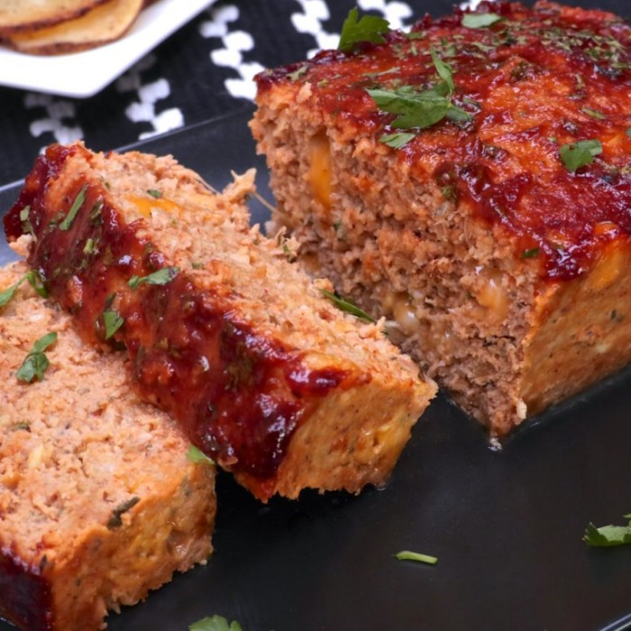

-

Farmstand Salad • $9
Bring a large pot of water to a boil. Add kosher salt to the boiling water, then add the pasta. Cook according to the package instructions, about 9 minutes. In a large skillet over medium-high heat, add the olive oil and heat until the oil starts to shimmer. Add the garlic and cook, stirring, until fragrant, 1 to 2 minutes. Add the chopped tomatoes, red chile flakes, Italian seasoning and salt and pepper to taste. Bring to a boil and cook for 5 minutes. Remove from the heat and add the chopped basil. Drain the pasta and add it to the sauce. Garnish with Parmigiano-Reggiano flakes and more basil and serve warm.
-

Ultimate Reuben • $18
1. Blend all the mousse ingredients together in your food processor until smooth. Add the cacao powder first and, as you blend, have all the ingredients to hand in order to adjust the ratios slightly as the size of avocados and bananas varies so much. The perfect ratio in order to avoid the dish tasting too much of either is to use equal amounts of both.
2. Taste and add a few drops of stevia if you feel you need more sweetness.
3. Fill little cups or shot glasses with the mousse, sprinkle with the cacao powder or nibs and serve. Tip If you don’t have a frozen banana to hand you can just use a normal one and then chill the mousse before serving for a cooling dessert.
-

Fig & Berry Plate • $16
Seasonal.
For the topping, boil the potatoes in salted water until tender. Drain and push through a potato ricer, or mash thoroughly. Stir in the butter, cream and egg yolks. Season and set aside. For the filling, melt the butter in a large pan. Add the shallots, carrots and celery and gently fry until soft, then add the garlic. Pour in the wine and cook for 1 minute. Stir in the tomato purée, chopped tomatoes and stock and cook for 10–15 minutes, until thickened. Add the shredded chicken, olives and parsley. Season to taste with salt and pepper. Preheat the oven to 180C/160C Fan/Gas 4. Put the filling in a 20x30cm/8x12in ovenproof dish and top with the mashed potato. Grate over the Gruyère. Bake for 30–35 minutes, until piping hot and the potato is golden-brown.